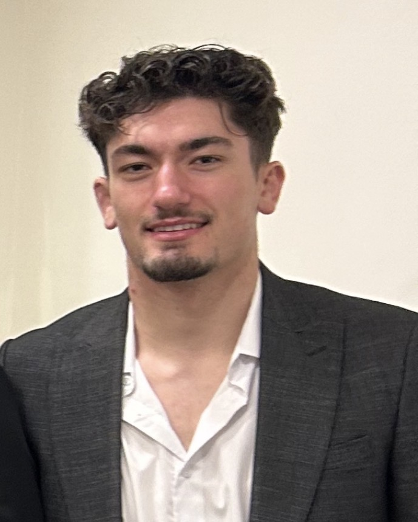

Hello and welcome to my website. My name is Batu Yildiz, and I am an Information Systems major at Hofstra University, graduating in 2027. This site serves as a personal portfolio where I share my background, experiences, and the skills I am continuing to develop throughout my academic journey. I am passionate about combining technology and problem-solving to create efficient and innovative solutions. Through my coursework and personal experiences, I have developed strong leadership, communication, and analytical skills. I have also faced and overcome various challenges that have helped shape my work ethic, discipline, and mindset. On this website, you will learn more about my interests, goals, and the progress I am making toward building a successful career in the field of Information Systems. Thank you for taking the time to visit and learn more about me.
As an Information Systems student, I am building a strong foundation in both technology and business. I have experience working with HTML and CSS to create structured and visually organized websites, and I am continuing to expand my knowledge in areas such as data, systems, and problem-solving. I take pride in being disciplined, motivated, and detail-oriented. Whether working independently or as part of a team, I focus on completing tasks efficiently while continuously improving my skills. I am especially interested in opportunities that allow me to apply my knowledge in real-world situations and grow both professionally and personally. My goal is to develop into a well-rounded professional who can use technology to solve meaningful problems and contribute value in any organization I am part of.